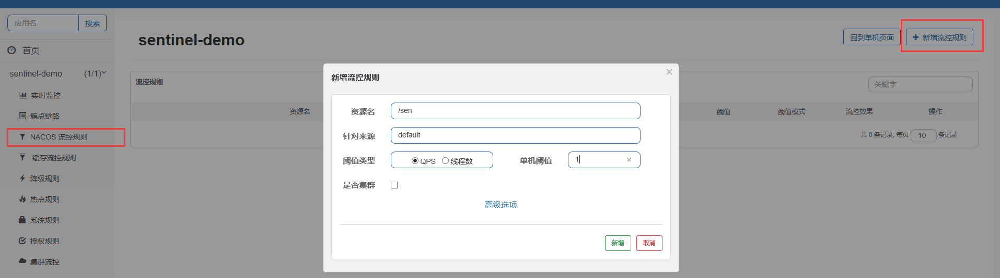

和大家聊一聊alibaba开源很好用的流控组件Sentinel
Sentinel是面向分布式服务框架的轻量级流量控制框架,主要以流量为切入点,从流量控制,熔断降级,系统负载保护等多个维度来维护系统的稳定性。
1 | . 2012年，Sentinel诞生于阿里巴巴，其主要目标是流量控制。 |
Sentinel对于资源的控制主要通过流量(QPS)和并发线程数做控制。
更多的了解可点击Sentinel使用指南
如何实现
下面说说具体怎么利用Nacos实现规则的持久化
先声明一下各个组件的版本
| 组件 | 版本信息 |
|---|---|
| SpringBoot | 2.2.0 |
| SpringCloud | Hoxton.RELEASE |
| Nacos | 1.1.4 |
| JDK | 1.8.0_232 |
提一句,这里声明jdk的版本原因是:如果版本偏低,在集成sentinel的nacos配置时，读取不到参数的问题,大致版本高于1.8.0_5这个应该就可以，具体没有测试具体哪一个版本出现了偏差
第一步:Sentinel客户端配置
- 添加依赖
1
2
3
4
5
6
7
8
9
10<dependency>
<groupId>com.alibaba.csp</groupId>
<artifactId>sentinel-datasource-nacos</artifactId>
<version>1.7.0</version>
</dependency>
<dependency>
<groupId>com.alibaba.cloud</groupId>
<artifactId>spring-cloud-starter-alibaba-sentinel</artifactId>
<version>2.1.1</version>
</dependency> - 添加配置
新建一个SpringBoot项目，配置文件添加如下配置1
2
3
4
5
6
7
8
9
10
11
12
13
14
15
16
17
18
19
20
21
22server:
port: 8868
spring:
application:
name: sentinel-demo
cloud:
sentinel:
transport:
#Sentinel控制台的地址
dashboard: 127.0.0.1:8192
#Sentinel的默认端口
port: 8719
#开启懒加载
eager: true
datasource:
ns:
nacos:
serverAddr: 127.0.0.1:9010
dataId: ${spring.application.name}-flow-rules
groupId: SENTINEL_GROUP
rule_type: flow
dataType: json - 启动下载好的nacos服务
找到/nacos/conf下面的nacos-mysql.sql文件,在mysql导入运行，建立nacos对应的库表结构
再该目录下打开application.properties文件，修改如下nacos数据库信息.png修改nacos端口.png! 主要是修改了nacos服务的启动端口已经配置nacos的数据库信息
然后在/nacos/bin下面，因为是windows系统，单机startup.cmd启动服务即可,登录名和密码均为nacos
第二步:Sentinel控制台改造
因为Sentinel的源码提供的流控规则生效是在内存中发生的，所以当我们重启应用时，配置好的规则就会丢失，而在生产环境中，
需要进行规则配置持久化，但Sentinel-dashboard源码是不具备持久化的功能，我们需要将其进行改造,采用Push架构模式
更多介绍点击
下载Sentinel-dashboard源码
点击下载
选择sentinel-dashboard作为我们改造的源代码改造源代码
① 在src\main\java\com\alibaba\csp\sentinel\dashboard\controller\v2下面找到FlowControllerV2.java
修改前
修改后
② 在src\test\java\com\alibaba\csp\sentinel\dashboard\rule\目录下，将nacos复制到src\main\java\com\alibaba\csp\sentinel\dashboard\rule下
如图:
③ 找到配置文件application.properties文件
增加nacos的配置地址：1
2
3
4#配置nacos服务的地址
=127.0.0.1:9010
#在这里我修改了服务的端口为8192，对应第一步中配置文件的dashboard参数
=8192
在src\main\java\com\alibaba\csp\sentinel\dashboard\rule\nacos\NacosConfig.java中修改如图
修改前：

修改后：

④ 找到src\main\webapp\resources\app\scripts\directives\sidebar\下的sidebar.html该文件，修改如图
修改前：

修改后：

我将原来的缓存规则配置做了保留，新加了持久化配置的菜单
⑤ 找打src\main\webapp\resources\app\scripts\controllers\下的identity.js该文件，修改如图

然后可以直接在本地运行这个SpringBoot项目，或者进行打包后后运行，顺带启动客户端服务，Sentinel控制台用户名和密码均
为sentinel，启动后界面如下：

第三步：测试效果
- 客户端启动后，Sentinel控制台就会出现该该客户端的资源

先在客户端编写一个接口返回信息用于测试限流，然后重启客户端
1 | package com.example.sentineldemo.controller; |
随便点击几下，控制台就可监控到服务端的流量情况
- 我们先通过缓存配置规则来限制流量
如图：
由于我们是手动点击，受手速及网络影响，请求的频率有限，所以选择阈值为1，使用postman进行测试
效果如下：
当我们频繁点击请求接口，超过阈值时，就会被告知访问频率过高的提示。限流成功。
重启服务或者控制台。再次点击请求，限流失效，控制台缓存流控规则也没有信息，符合我们上面所说。只是发生在内存中的规则。
- 通过持久化配置规则来限制流量
如图：持久化规则1.png持久化规则2.png
通过NACOS的流控规则和簇点链路都是可以进行流控规则的新增，点击新增，完成对流控规则的持久化配置
查看nacos的配置列表和数据库信息:

使用postman频繁点击请求接口：
使用了nacos配置持久化，控制台是否开启对我们来说无所谓，需要补充规则配置时开启，进行规则的补充就可以，也可以直接在
nacos上面新增配置文件，格数据式参照我们在控制台新增的配置即可
关闭客户端，nacos，控制台程序，在此启动客户端和nacos
效果如下：
证明我们流控规则的持久化起作用了！
Sentinel-dashboard我进行了源码改造适用于nacos的持久化规则配置，改造后的代码地址,SpringCloud集成该配置也是差不多的。
流控规则的持久化还有并发线程的限制，这里没有做过多演示。此外，Sentinel还提供了降级、授权，集群等很多功能，这里只对流量控制做了改
造的示例，在生产环境使用Sentinel有三种模式，这里对Push模式做了改造，Sentinel还提供了apollo、Zookeeper等的第三方支持，大家可以
自己研究下，大致都是类似的，详细文档

![微信分享二维码]()